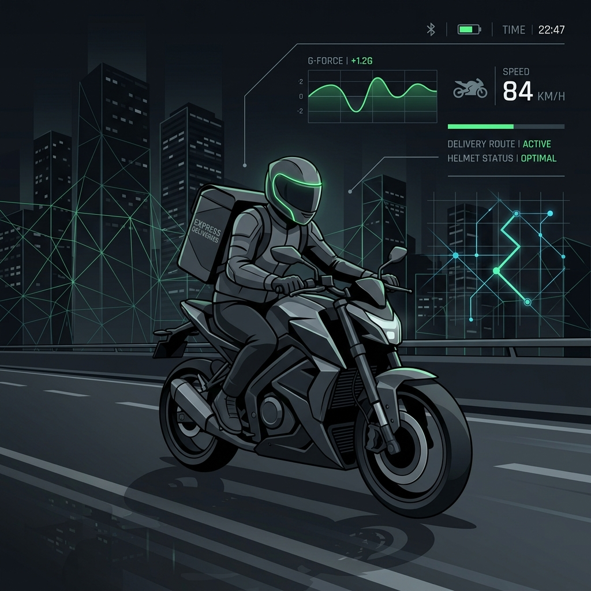
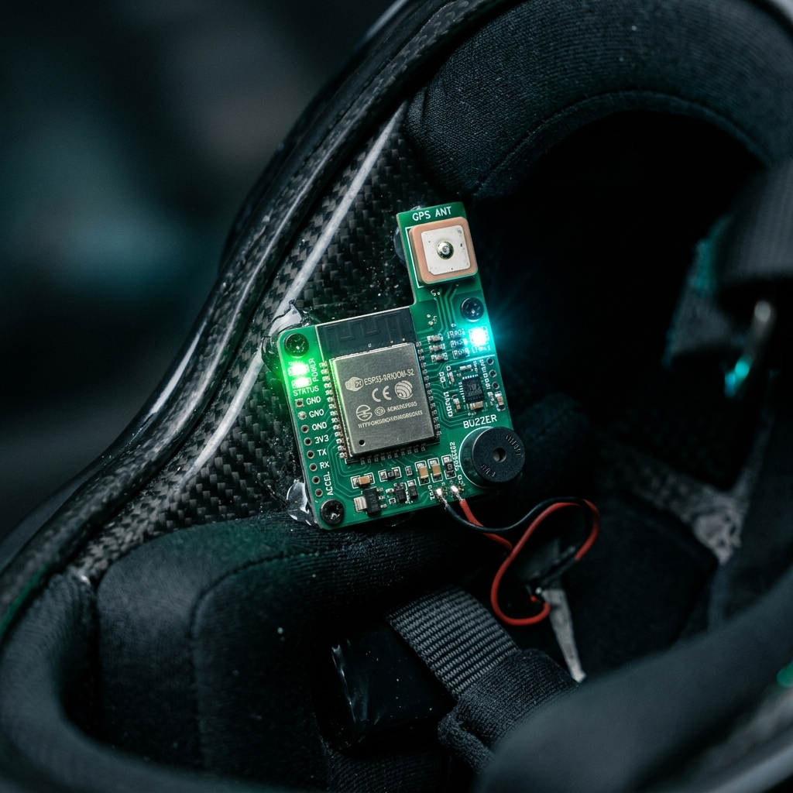
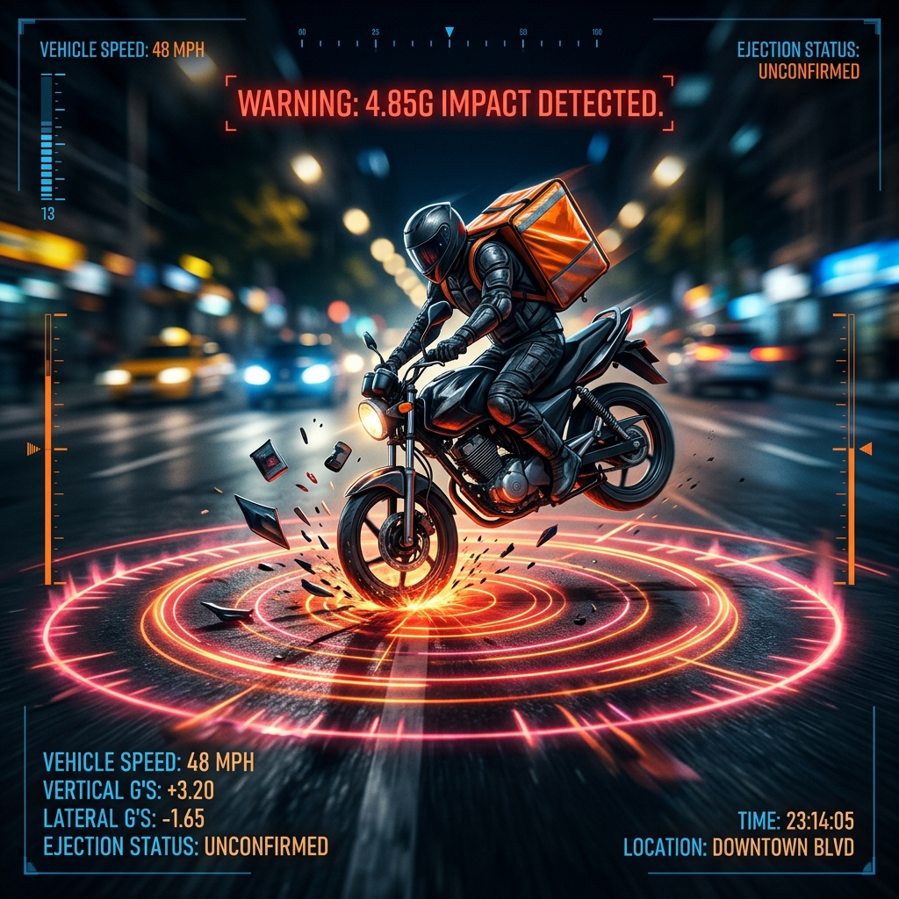
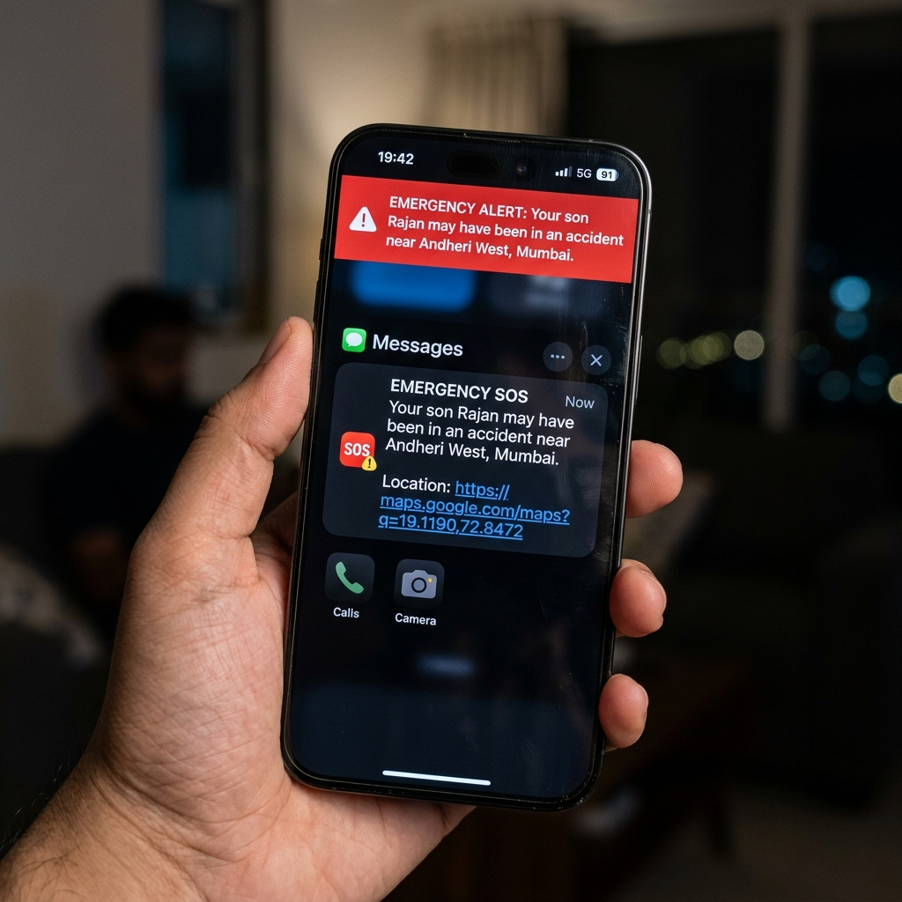
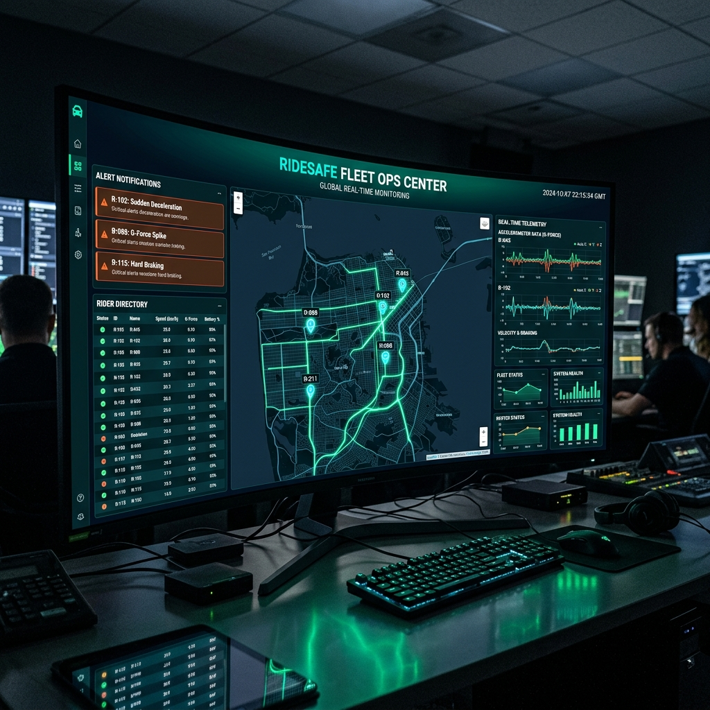

An IoT-powered crash detection system that senses high-impact collisions in real-time and dispatches emergency SOS with GPS coordinates — all within 1.8 seconds.

India accounts for 11% of global road fatalities. Most delivery riders lack any crash detection or emergency alert system. Minutes lost waiting for help cost lives.
Annual road fatalities in India — one life lost every 3 minutes
Of all road deaths are two-wheeler riders — the most vulnerable group
Average emergency response time in urban India — the golden hour is lost
RideSafe AI compresses the response loop from 45 minutes to under 2 seconds — turning silent crashes into instant SOS dispatches.
A compact ESP32-based IoT sensor module integrating accelerometer, gyroscope, GPS, and cellular connectivity — engineered to detect and respond in milliseconds.

Helmet-mounted hardware with continuous 60Hz telemetry acquisition, real-time G-force analysis, and Twilio-powered emergency dispatch capability.
From impact detection to emergency dispatch — every microsecond is engineered to save a life. Here's how it works.
The MPU6050 accelerometer captures 3-axis acceleration data at 60 samples per second. Our algorithm calculates the combined G-force vector magnitude and triggers when it exceeds the calibrated 4.5G threshold — distinguishing real crashes from speed bumps and potholes.

Every component chosen for reliability, speed, and seamless integration — from sensor hardware to cloud services.
Click the button below to simulate a high-G crash impact — witness the automated telemetry log and the instant emergency SOS trigger sequence.

When a real crash is detected and the 30-second override expires, an SMS is instantly dispatched to all registered emergency contacts with precise location data.
Exact crash location embedded as a clickable Google Maps link for immediate navigation
Simultaneously alerts family members and the fleet manager per rider profile
Twilio programmable SMS ensures delivery within 312ms of trigger activation
A centralized operations dashboard with live rider tracking, crash alerts, telemetry data, and rescue coordination — everything a fleet manager needs at a glance.

RideSafe AI is an open innovation project designed to protect delivery riders and gig workers across India — because every life on the road matters.